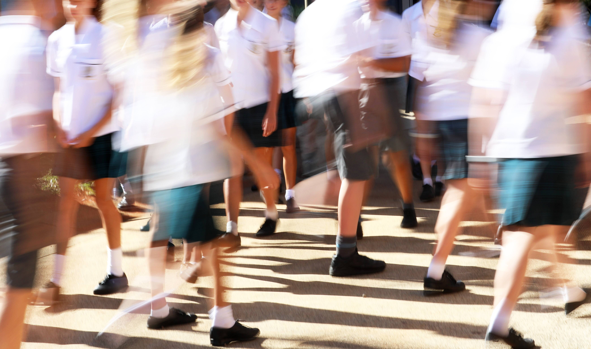
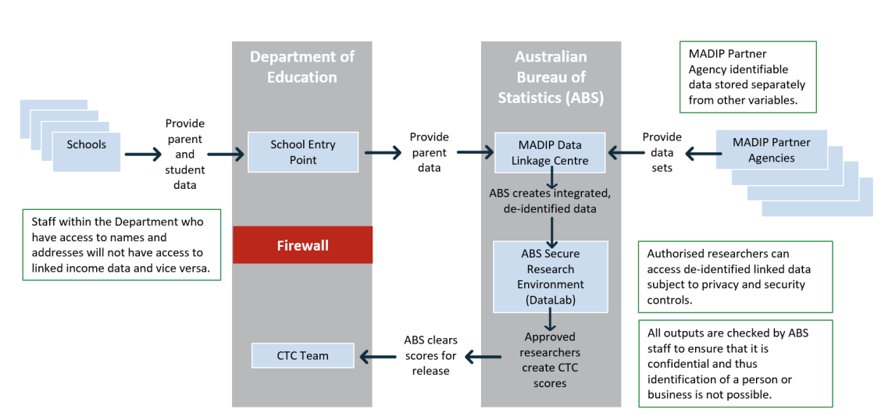
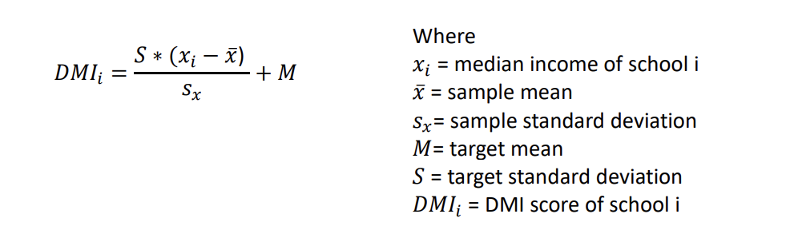
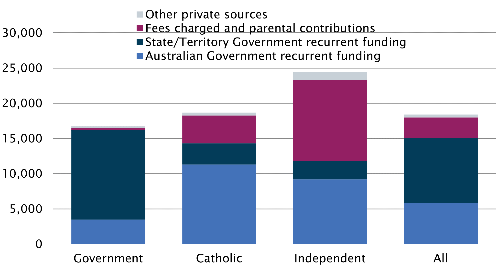

How this works: School funding in Australia

Over the last few years, many news outlets have reported on differences in government funding between government and non-government schools in Australia. We'll go through to what extent does the Australian government fund schools, how does the allocation work, and what are the arguments for and against it?
1.0 At a glance
Regulation, operation, and funding of education is primarily the responsibility of the States and territories because the Australian Government does not have a specific constitutional power to pass laws pertaining to education, but the Commonwealth does play a role.
State and territory governments provide the majority of public funding for government schools and the minority of public funding for non-government schools. Recurrent funding contribution levels and policies vary state-to-state, but are agreed together as part of a bilateral agreement with the Australian Government under the National School Reform Agreement
Conversely, the Australian Government provides the majority of public funding for non-government schools, and the minority of public funding for government schools. Recurrent funding contribution comprises a base amount per student for all students in Australia, and applies a reduction percentage to non-government schools based on parental income (more on this in Section 2)
Schools have five major funding sources
- Australian Government recurrent funding
- Australian Government non-recurrent funding (i.e., capital grants program, schools upgrade fund both of which constitute a tiny % of total funding allocated). These are largely federal government programs designed to support private schools in disadvantaged areas.
- State / Territory recurrent funding
- Fees charged and parental contributions
- Other private sources
Government funding is paid to states and territories for all schools in their jurisdiction. States and territories are then responsible for distributing the funding to approved statutory authorities (i.e., QCAA for QLD, which is an education department), who then administer the funding for one or more schools using the Schooling Resource Standard (”SRS”)
Types of schools
- Government schools, being those operated by state / territory departments
- Non-government schools. Can be further classified based on self-identification of the school’s affiliation. They’re grouped for reporting as Catholic or private.
Quick statistics
- ~A$73Bn (state and federal) Government recurrent expenditure, or ~6% of GDP
- ~10,500 registered schools were operating in Australia in 2019. ~70% (7,100) are government schools, 4,400 are non-government, and of the non-government, ~two thirds are Catholic
- ~282,000 teachers across primary and secondary schools, equating to ~26 teachers per school
- 60 per cent of Australian students (primary and secondary) are educated via government schools, with the rest in non-government schools (which is itself split pretty equally between Catholic and private)
2.0 SRS and funding distributions
2.1 Schooling resource standard ("SRS") overview
Funding is worked out by reference to the SRS, which is an estimate of how much total public funding a school needs to meet the educational needs of its students. It comprises a base per student amount and 6 loadings to help students and schools in priority cohorts:
- Disabled students
- Low English proficiency
- Aboriginal and Torres Strait Islander
- Socio-educational disadvantages
- School location
- School size
The SRS was based on recommendation from the 2011 Review of Funding for Schooling led by David Gonski (labelled the Gonski Review). This review found that over the past decade, the performance of Australian students had declined at all levels compared to international benchmarks. The SRS funding amounts were calculated by analysing funding levels in high-achieving ‘reference schools’ - schools where at least 80% of students were achieving above the national minimum standard in the NAPLAN reading and numeracy assessments across 3 consecutive years.
The Department of Education calculates an SRS for each school year by adding the base amount and loadings it has calculated for the school using the formulas in the Australian Education Act 2013, and is increased each year by the SRS indexation factor. The SRS is also used in the National School Reform Agreement to describe state and territory funding contributions for schools. For non-government schools only, the SRS base is generally discounted (up to a cap of 80%) by a school community’s capacity to contribute “(CTC)” to the operating costs of the school. Some non-government schools (i..e, majority aboriginal schools) are exempt from having a CTC score determined.
By 2029, all schools in the same sector will be funded on a consistent share of the SRS by the Commonwealth. In line with states and territories having full constitutional responsibility for schooling, the Commonwealth is moving toward
- Consistently funding at least 20% of the total SRS for government schools, reflecting the Commonwealth’s role as the minority public funder of this sector
- Consistently funding at least 80% of the total SRS for non-government schools, reflecting the Commonwealth’s role as the majority public funder of this sector.
2.2 SRS calculation and CTC discounts
In 2024, the SRS funding amounts were
- $13,557 for primary students; $17,036 for secondary students
- The Commonwealth will provide an estimated $21B in base funding for schools in 2024
CTC discounts
CTC reduces the SRS base amount for most non-government schools, and is a measure of the capacity of the parents and guardians of students at a non-government school to contribute financially to the operating costs of the school relative to the capacity at other non-government schools.
The size of the CTC reduction depends on the school’s CTC score, and it Ranges from 10% of the SRS base amount to 80%
Previous arrangements for calculating CTC used an area-based socio-economic status (”SES”) score, which was the best data available when implemented in 2001. In 2020, the Australian Government introduced a new method for calculating a school’s community’s CTC based on a direct measure of income (median income) of parents and guardians of students at a school, ensuring that more funding flows to the schools that need it most, and was applied to all schools in 2022.
The DMI links parents and guardian names and addresses collected through income tax data and other information held by the ABS through the Multi-Agency Data Integration Project (”MADIP”) via the following mechanisms, involving tax return data and secure ABS DataLab files.
MADIP information collection process
Source: ABS
Once a school has gathered the annual income (adjusted taxable income) of all parents or guardians for each student, an annual family income for each student is determined, the median family income is determined, which translates into a DMI score and then a CTC is calculated (target mean is 103, target standard deviation is 13, weighted by number of enrolments)
Calculation of DMI scores
The CTC score that applies to funding for a school using the DMI methodology is the average DMI score for the school for the previous three years. This score is then compared to other schools, and proportioned accordingly.
2.3 SRS loadings
Loadings were developed by looking at how much funding in addition to the base amount was required to help students in priority cohorts achieve their potential. All are indexed at or above wage and consumer prices each year, with the exception of school size loading. For each loading:
- Disabled students (~11% of Commonwealth recurring school funding)
- Low English proficiency (~0.3% of Commonwealth recurrent school funding)
- Aboriginal and Torres Strait Islanders (~2% of Commonwealth recurrent school funding)
- Socio-educational disadvantage (~10% of Commonwealth recurrent school funding)
- School location (~2% of Commonwealth recurrent school funding)
- School size (~1.5% of Commonwealth recurrent school funding)
Based on Nationally Consistent Collection of Data on School Students with Disability (”NCCD”) which breaks down by level of additional support they are provided to access and participate in learning (extensive, substantial, supplementary). The following is the SRS loading by NCCD level of adjustment.
Where at least one parent has completed school education only to Year 9 (or equivalent) or below, the loading is 10% of the SRS funding amount
Amount depends on the proportion of Indigenous students in the school. If there is 1 student, the loading is 20% of the SRS funding amount. if 100% of students are Indigenous, the loading is 120% of the SRS funding amount.
Based on percentage of students in the lowest 2 quartiles of socio-educational advantage (”SEA”) develop by Australian Curriculum, Assessment and Reporting Authority (”ACARA”), looking at things like educational status of students’ parents, occupation. The greater the % of a school’s students in each of the bottom 2 quartiles of SEA, the higher the loading, up to a maximum of 50% of the SRS funding for Quartile 1, and 37.5% for Quartile 2.
Based on regional and remote locations in recognition that it generally costs more to educate students in regional and remote schools than it does for students in city-based schools. Calculated using a school’s Accessibility / Remoteness Index of Australia (”ARIA”) score.
Based on providing extra funding for medium, small, and very small schools in recognition that they cannot achieve the same efficiencies of scale as a large school. This is the only loading that is calculated as a set dollar amount, rather than as a proportion of the SRS funding amount. 1. Primary schools with up to 300 students and secondary with up to 700 attract this loading. Primary schools with between 15 and 200 students attract the max loading of ~$214k in 2024, whereas secondary schools with between 100 and 500 students attract the max loading of ~$342k in 2024
2.4 SRS indexation
SRS base amounts and loadings are indexed each year to reflect changes in prices and, therefore the costs faced by schools. The SRS indexation factor for a year is the higher of 3%, or a factor calculated by the Department each year from movements in the Wage Price Index and CPI published by the ABS. The SRS indexation factor for 2024 is expected to be available after 13 Aug 2024, and for 2023 was 4.2%.
3.0 Government spending breakdown
Across the four major funding sources mentioned earlier:
- Government ($44.1B total 2021 funding)
- Catholic ($13.8B total 2021 funding)
- Independent ($16.6B total 2021 funding)
~80% of funding comes from state / territory, 21% from Australian Government, ~2% from fees, 1.4% from other private sources
~16% of funding comes from state / territory, 61% from Australian Government, ~21% from fees, ~2.2% from other private sources
~11% of funding comes from state / territory, ~24% from Australian Government, ~47% from fees, ~4.8% from other private sources.
We can see graphically how these split for 2021 below
4.0 Issues with SRS and controversy
Given that the SRS per student is by definition the minimum level of funding required to meet the needs of students based on the findings of the Gonski Report, ideally no school in Australia should receive less than this figure (irrespective of source of funding). Over the last few years, several reports have highlighted that 98% of non-government schools are over-funded, and 98% of government schools are underfunded. Some non-government schools in WA receive funding that is in excess of 140% of the SRS.
- Over-funded: Total funding per FTE student as a proportion of SRS > 100%
- Under-funded: Total funding per FTE student as a proportion of SRS < 100%
Since the SRS is the same for every student irrespective of school, the largest drivers of the difference in funding per student comes from (1) the increase in non-government funding (i.e., fees charged to parents for non-government schools) and (2) the CTC reduction that non-government schools have imposed on them.
There are a number of drivers resulting in the statement that non-government schools are over-funded and government schools are under-funded.
- Government Schools
- Non-Government Schools
Capital works / ‘schools-upgrade fund’ and other Australian Government non-recurrent funding not being given / assigned to government schools. Some state and territory governments choosing to re-allocate spending and not abiding by the 80% minimum contribution to SRS (20% via the Commonwealth)
The CTC reduction in base SRS funding is less than the increase in funding received by fees and private sources. The CTC reduction being less than prior years given that Independent schools have had the largest national increase in enrolments of any sector between 2018-2023, which has resulted in total funding growth. Many of these enrolments have been from low-to-middle income families, which drives down the CTC discount applied to the SRS base, increasing the published government funding per student for non-government schools.
5.0 Appendices - MADIP
The Multi-Agency Data Integration Project (MADIP) is a partnership among seven Australian Government agencies to combine longitudinal information on healthcare, education, government payments and personal income tax with population demographics (including the Census) to create a comprehensive picture of Australia over time.
DMI used in the calculation of the CTC is collected from MADIP. In the DMI, adjusted taxable income (ATI) is the primary source of income data. In 2019 ATI was available for 77 per cent of parents. For other parents, an alternative income estimate is sourced from information such as payment summaries or social services data. This is robust for the purpose of estimating DMI. However, given the richness of the other data available, there may be opportunities to further improve data quality using imputation, but this requires further exploration.